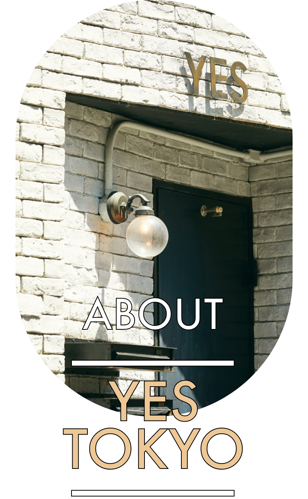
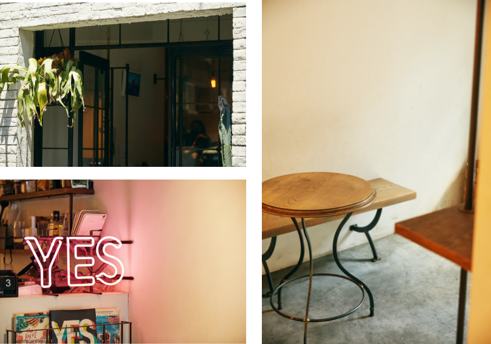
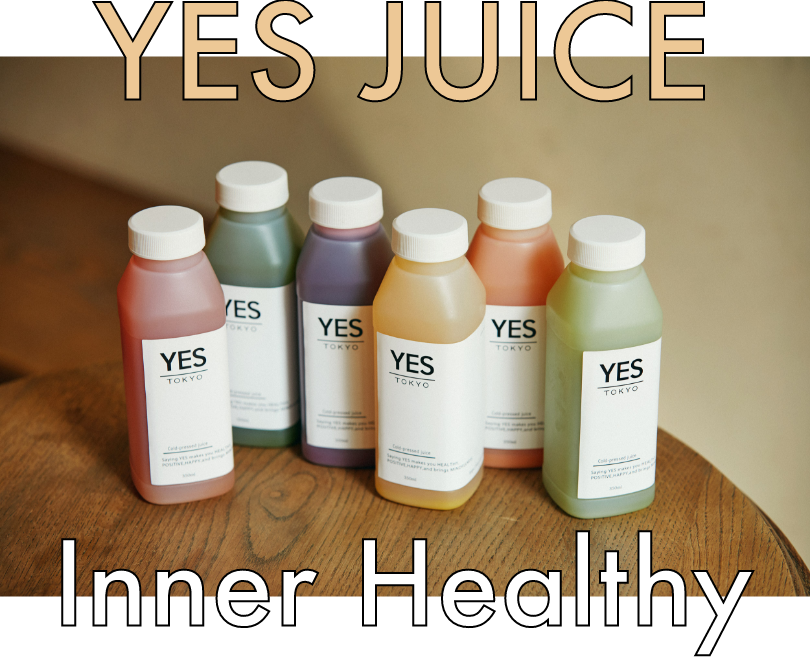
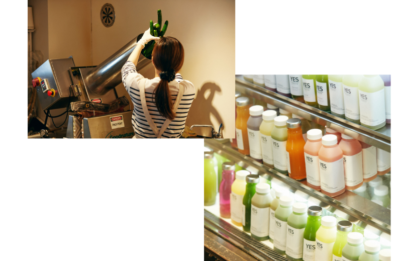
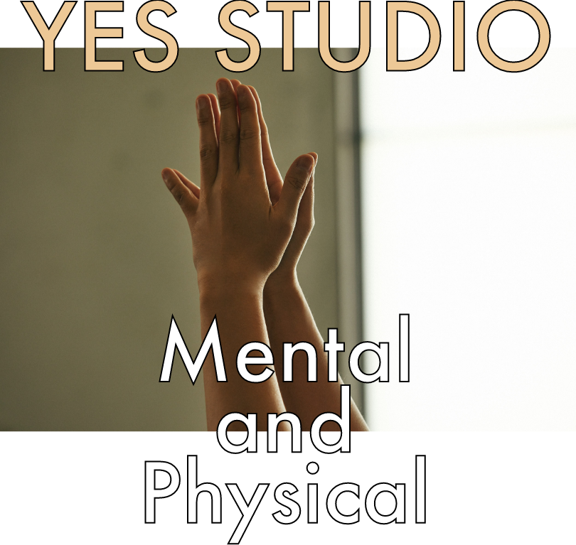
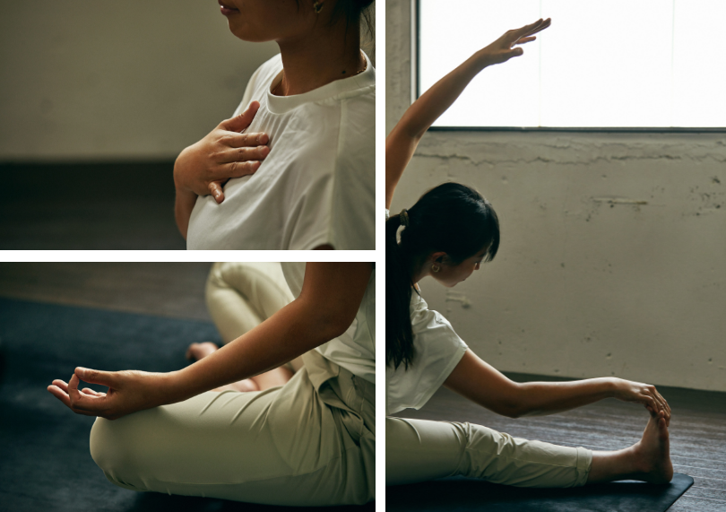
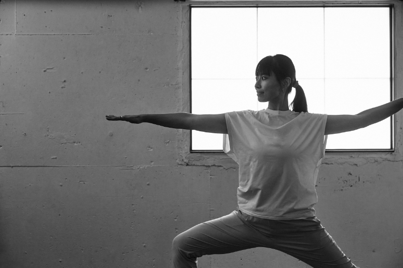
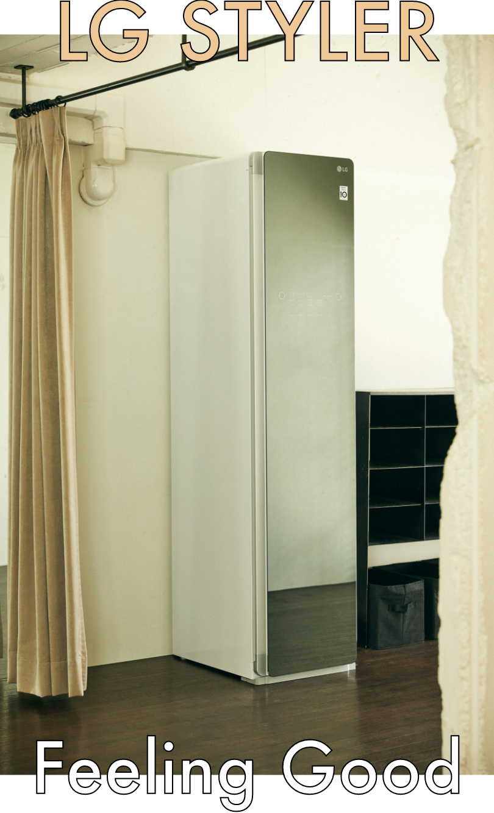
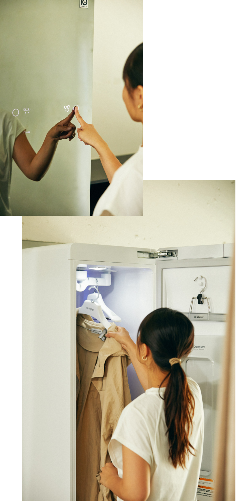
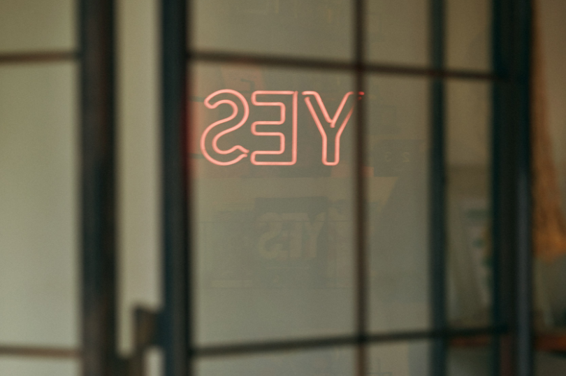

2022.06.13
コールドプレスジュースショップと、ヨガスタジオを併設するYES TOKYO。内と外からのアプローチによって、ヘルシーな体とポジティブな心の共鳴を体感できる場所です。ここにもLG Stylerが設置されているので、その魅力を伺いながら、“気持ちいい”ライフスタイルの秘訣を探りに行きました。

中目黒で2016年にスタートしたYES TOKYOは、内側からも外側からもキレイを作るコンセプトでスタート。ヨガスタジオのYES STUDIOと、コールドプレスジュースバーのYES JUICEを併設しています。



コールドプレスジュースは素材に熱を加えず強い圧力をかけることで栄養素を飛ばさずに、そのままいただける特殊な製法。YES TOKYOには常に20種類のジュースと、季節ごとのシーズナルフレーバーが3種類スタンバイ。これを1本350ml飲むだけで約1kg分の野菜と果物が取れます。自分でカットして食べるにはなかなか難しい量の栄養が、体にガツンと入ってきてくれるのです。

人気のワケは種類の豊富さと美味しさ。美容や健康のために毎日の習慣にする方から、二日酔いや肌荒れ対策に訪れる方まで様々です。気になる体調をスタッフに伝えると、不足しているエネルギーを補うために最適なジュースをセレクトしてもらえます。口内炎ができてしまった時のビタミン補給、飲みすぎた翌日のデトックスなど、飲めば内側から体が喜ぶ気持ちよさを実感できるのが嬉しい。1000円以上の価値があると思える、まるで処方箋のようなジュースです。
一見、苦そうで敬遠しがちなグリーン主体のジュースも飲みやすく、フレッシュで自然な甘みが美味しい。ジュースにはアドインとしてCBDオイルを200円で追加することも可能です。CBDとはヘンプに含まれる成分「カンナビジオール」のことで、リラックス効果・集中力UP・免疫力UPが期待できます。寝つきが悪い方や、頭の使い過ぎで疲労を感じている方にオススメ。店頭ではオーガニック100％のオイルを使用したCBDティンクチャーや、CBDオイルに浸けたコーヒー豆のドリップバッグも購入できます。

経験豊富なインストラクターがひとりひとりに寄り添ったレッスンを行うYES STUDIO。６人のトップインストラクターとレギュラーインストラクターが所属し、少人数制ならではのアットホームな空間で、初心者から上級者まで幅広いニーズに合わせたレッスンを行います。

ヨガはすぐに体重を絞る即時的なものではなく、体自体を本質的に変えて、それが見た目に表れてくるもの。体だけではなく心にもフォーカスするから、自分を整える時間として通うビジネスマンも多いそうです。忙しい人こそ、一度、体験してみては？



YES STUDIOでは、なぜLG Stylerを導入したのでしょうか。その理由を伺いました。
「体の気持ち良さに対して、心は素直に反応するもの。ヨガのレッスンで内側からデトックスした後にも、除菌された清潔な服を気持ちよく着ていただきたいと思ったんです。帰り道、ふわっとした上着を羽織れたらいいですよね。実際に導入してみて生徒さんたちからご好評いただいています。ふんわりした仕上がりを感じていただけたり、シャキッとするとのレビューもありました。集中してレッスンをしている間に気にならない静音なのも嬉しい。導入して大正解でした」
「体の気持ち良さに対して、心は素直に反応するもの。ヨガのレッスンで内側からデトックスした後にも、除菌された清潔な服を気持ちよく着ていただきたいと思ったんです。帰り道、ふわっとした上着を羽織れたらいいですよね。実際に導入してみて生徒さんたちからご好評いただいています。ふんわりした仕上がりを感じていただけたり、シャキッとするとのレビューもありました。集中してレッスンをしている間に気にならない静音なのも嬉しい。導入して大正解でした」


YES TOKYO
10:00-20:00
〒153-0051
東京都目黒区上目黒1-3-11 YES BLDG.2F
03-3760-4715
mail: studio@yes-tokyo.jp
Composition & Text: Takako Nagai [CATAL DESIGN]
Photo: Kanta Matsubayashi
Video: Shun Okamoto